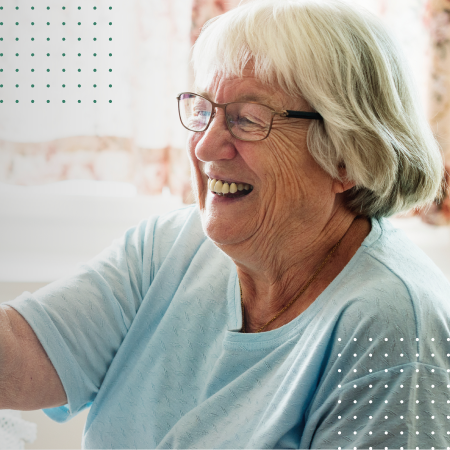
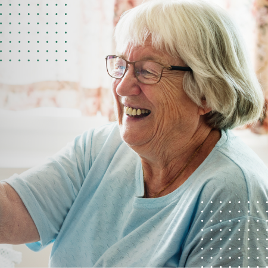
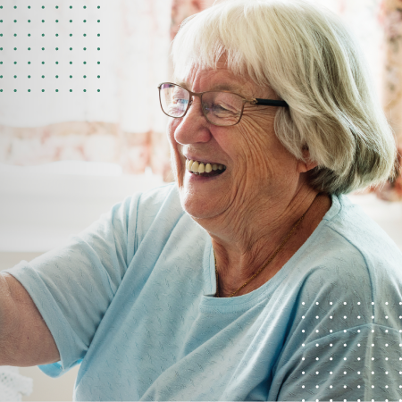

Renove sua Qualidade de Vida
Sua Casa para uma Vida Melhor
O Recanto dos Nobres é o ambiente familiar perfeito para você. Estamos assegurando um espaço alegre e agradável para todos os nossos visitantes.


Criada em 2005, a Casa de Repouso Residencial Recanto dos Nobres é um espaço destinado ao idoso na qual apresenta um serviço diferenciado. Foi criada, é administrada e tem como grande parte de seus profissionais, pessoas da mesma família, criando assim um ambiente aconchegante e agradável fazendo com que cada morador se sinta como parte desta família.
Além de possuir um espaço bem Serviçosdo que proporciona a cada morador conforto, segurança, saúde e bem estar, conta com profissionais de diversas especialidades tais como: Médico,Enfermeiro, Farmacêutico,Técnicas de Enfermagem, Nutricionista, Fisioterapeuta, Psicóloga e Cuidadores Treinados. Hoje a Casa de Repouso Residencial Recanto dos Nobres conta com duas unidades na Zona Leste de São Paulo: Unidade Vila Esperança – Penha e Unidade Jardim Anália Franco – Tatuapé.

Descubra como a Casa de Repouso Recanto dos Nobres Impactou Vidas e Criou Laços Especiais
Nosso suporte está disponível de Segunda a Sábado das 8:00 - 18.00
Clique no botão abaixo para ver a nossa localização no Google Maps e traçar o melhor caminho até nós.